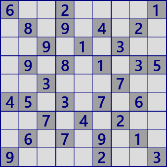
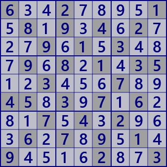

ここでは数独の解析アルゴリズムを解説します。
数独は、紙と鉛筆で遊ぶもので、私も趣味として楽しんでいます。
鉛筆と知力だけで解き、全ての数字が埋まったときの達成感は格別です。
しかし、ここで扱うのはヒトが鉛筆と知力で数独を解くことの解説ではありません。
C#プログラムで数独を解くことを目的とします。
これも、また別の数独の楽しみ方です。
この問題は、ヒトが鉛筆と知力だけで解くのは極めて困難だと思います。腕自慢の上級の方も試みない方がよいでしょう。身のためです。これはプログラムで扱う問題です。
6..2....1.8.9.4.2...9.1.3...9.8.1.35..3...7..45.3.7.6...7.4.2...6.7.9.1.9....2..3
解き方のルール

”数独の行・列・ブロック毎に1-9の数字を入れる”というルールは同じです。
プログラムで数独を解く場合の、解き方にルールを設けます。
”あるセルに数字を入れてみて失敗したらその数字は偽である” のいわゆる背理法は禁じます。
これを認めるのは「サル・・・」と同じで、何ら知的でなく、つまらないではないですか。
このサイトで扱うのは、論理的に解くアルゴリズムです。なお、これはローカルルールです。
異なる意見があることは承知しています。
左上の数独の解(数字配列）はこの通りです。でも、それはここでのルールの解ではありません。
解を求める論理的な説明が必要です。
▽次のステップへ
本サイトで紹介するのは、数独の問題を解く解析アルゴリズムです。
これらを理解し、それなりのコードを補えば数独を解くプログラムは組み立てられます。
一番良いのは、プログラム例を参考にご自身のコードを作ることです。
プログラム例は GNPX v4 で用いているものですが、バグフィックス、改良、単なる気分で、(しばしば）変更します。
このため、全体の統一性はいずれ崩れると思います。
なにより自分流を貫く方が、発展形のアルゴリズムを開発し、組み込むうえでもよいでしょう。
"C#で数独を作る"に関しては、直接には解説していません。
ラテン方陣の作り方（ソース込みのプロジェクトあり、あるいはGNPXに含む）と、
解析アルゴリズムを組合わせるだけのことです。
Winアプリケーション、プログラムのソース、プロジェクトは
Github にあります。参考になるでしょう。
2024年5月(予定)に大幅な改修が完成します(v5)。
- ほとんどの解析コードをビット表現方式に書き換えました。 これによって、アルゴリズムは単純になり、バグが発生しにくくなりました。
- 新しいリンク表現を導入しました。これによって、新しいタイプのリンクを導入しやすくなりました（ALSM,AICM,ALSXZ,...）
- 既存のアルゴリズムを拡張しました(DeathBlossom,SueDeCoq,Forece,...）
- アルゴリズム開発時の支援機能を追加しました。これは、通常使用時には見えません。